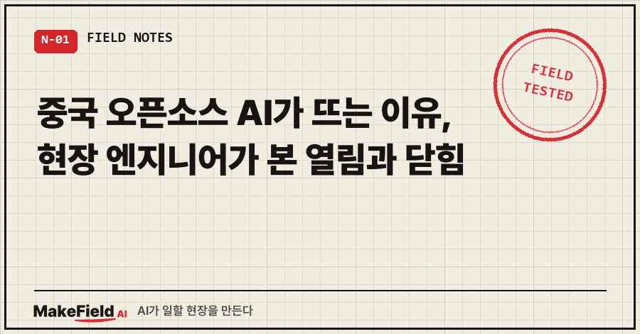
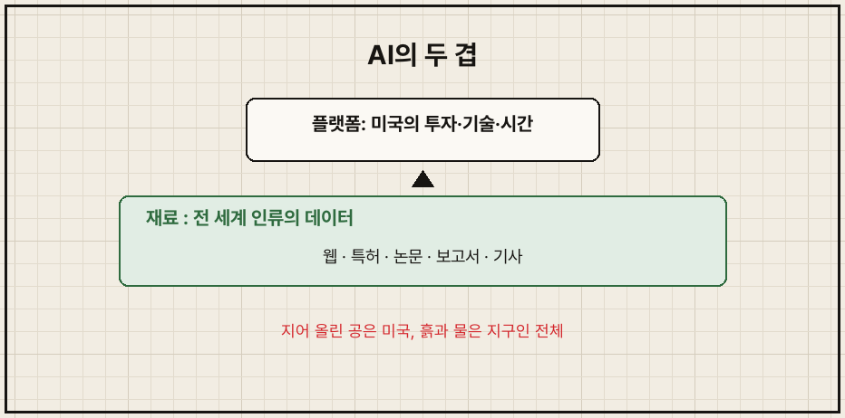
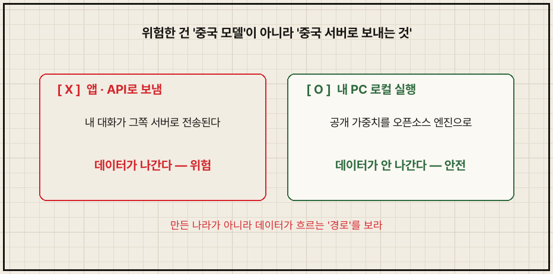

누가 만들었는지 꺼려하던 모델로, 지금은 사람들이 되레 몰려갑니다.
1년 전만 해도 "그거 중국 거잖아" 하며 안 쓰던 오픈소스 AI가 그새 흐름을 바꿨어요.
저는 이걸 기술 뉴스가 아니라, 매일 AI를 실무에 굴리는 사람의 눈으로 지켜봤습니다.
이 글은 왜 사람들이 닫힌 AI에서 열린 AI로 눈을 돌리는지, 그리고 저는 왜 그 흐름을 자연스럽게 보는지에 대한 기록이에요.
저는 수소 설비 제어판넬을 15년째 만지는 엔지니어예요.
판넬 설계하고 PLC 로직 짜는 게 본업인데, 요즘은 그 일을 AI랑 같이 합니다.
빠른 상용 AI도 쓰고, 제 노트북 안에서만 도는 로컬 모델도 같이 굴려요.
그래서 이번 흐름이 저한테는 남의 나라 얘기가 아니었어요.
1. 새 모델이 나흘 만에 사라진 날
지난 6월, 제가 쓰던 AI의 최상위 모델이 나흘 만에 통째로 막힌 일이 있었어요.
회사가 스스로 끊은 게 아니라, 정부의 수출통제 명령 때문이었죠. (이 사건 자체는 예전 글에서 자세히 풀었어요.)
그때 제 머릿속에 남은 건 업무 걱정보다 좀 더 근본적인 질문이었어요.
이 대단한 AI는, 대체 누구의 것일까.
2. AI를 키운 재료는 누구의 것인가
저는 미국을 존경해요.
이 거대한 AI 플랫폼을 지어 올린 시간과 투자, 기술력은 분명 미국의 공이에요.
우방국 국민으로서 그 덕을 매일 보고 있고요.
그런데 그 AI를 학습시킨 '재료'를 생각하면 얘기가 좀 달라져요.
웹 문서, 특허, 논문, 보고서, 기사 — AI가 삼킨 건 전 세계 사람들이 남긴 결과물이에요.

플랫폼을 세운 공은 미국이지만, 그 안을 채운 흙과 물은 인류 공동의 유산이라는 거죠.
그래서 이 결과물을 국력과 자본의 논리로만 잠가버리는 흐름엔, 솔직히 아쉬움이 남아요.
자본주의 시장에선 당연한 셈법이란 것도 알지만요.
3. '중국 오픈모델은 위험하다'는 말, 반은 맞고 반은 틀려요
여기서 많은 분이 걱정하시죠. "중국 모델 쓰면 정보 새는 거 아니냐."
찜찜함, 저도 있어요. 무단 수집 얘기가 많은 나라니까요.
근데 기술적으로 딱 하나만 짚을게요.
오픈웨이트(공개된 가중치) 모델의 핵심은, "누가 만들었나"와 "내 데이터가 어디로 가나"를 분리한다는 거예요.

모델 가중치 파일 자체는 그냥 숫자 덩어리예요. 혼자서는 인터넷으로 뭘 내보낼 능력이 없어요.
데이터가 밖으로 나가려면 반드시 '네트워크를 쓰는 실행 소프트웨어'가 있어야 하는데, 로컬에서 도는 오픈소스 실행기는 그 통신을 들여다보고 막을 수 있어요.
그러니 진짜 위험한 건 '중국이 만든 모델'이 아니라, '중국이 호스팅하는 서버에 내 대화를 보내는 것'이에요.
물론 오픈모델이 만능은 아니에요.
출처 불명의 모델 파일엔 악성코드가 숨을 수도 있고(그래서 안전한 파일 포맷을 골라야 해요), 인터넷 붙은 PC라 완벽한 격리도 아니고요.
그래도 "닫힌 서비스에 일단 다 보내는 것"과는 구조가 근본적으로 달라요.
4. 그래서 저는 '열림'에 걸어요
닫는 순간 신뢰가 새고, 그 틈으로 열림이 자라요.
사람이 많이 쓰는 도구는 그만큼 빨리 커져요.
모델 알맹이가 대화 한 번에 실시간으로 자라는 건 아니지만, 사용자가 몰리면 그 생태계 — 사용법, 트러블슈팅, 예제, 붙는 도구들 — 이 눈덩이처럼 불어나거든요.
지금 오픈모델 쪽에 그 눈덩이가 굴러가기 시작했어요.
한 시장 집계에선, 1년 전 1%도 안 되던 오픈모델 사용 비중이 30%를 넘겼다고 하고요.
저는 이걸 반미도 친중도 아닌, 그냥 물이 낮은 데로 흐르는 일로 봐요.
사람들은 잠긴 문 앞에 오래 서 있지 않아요. 열린 문으로 걸어가죠.
저는 여전히 상용 AI 덕에 매일 성장하고, 그 시스템에 감사해요.
다만 인류가 함께 쌓은 유산 위에 지은 거라면, 그 문을 너무 쉽게 잠그지는 않았으면 하는 바람이에요.
그래서 저는 성능은 빌려 쓰되, 끊겨도 굴러가게 열린 로컬 모델 한쪽을 늘 열어둡니다.
자주 묻는 질문
Q. 오픈소스 AI, 성능이 상용만큼 되나요?
솔직히 최상위 상용 모델의 복잡한 판단력엔 아직 못 미쳐요. 근데 분류·요약·문서 정리 수준은 요즘 오픈모델로 충분하고, 격차도 빠르게 좁혀지는 중이에요. 전부 갈아타라는 게 아니라 한쪽에 열어두라는 겁니다.
Q. 그래도 중국산 모델은 꺼려지는데요?
그 마음 이해해요. 핵심은 '어디서 돌리느냐'예요. 그쪽 앱이나 API로 쓰면 데이터가 나가지만, 공개된 가중치를 내 PC 오픈소스 엔진으로 돌리면 얘기가 완전히 달라져요. 만든 나라보다 데이터가 흐르는 '경로'를 보세요.
다음 글에선, 사무용 PC에서 실제로 오픈모델 하나를 올려 돌려본 과정을 순서대로 풀어볼게요.
여러분은 '열린 AI'와 '닫힌 AI' 중 어느 쪽에 더 신뢰가 가세요?
AI를 실무에 굴리다 깨지고 고친 기록은 makefield.ai에 차곡차곡 쌓는 중이에요.
태그: #중국오픈소스AI #오픈소스LLM #오픈웨이트 #로컬AI모델 #AI개방정책 #AI주권 #온프레미스AI #AI데이터보안 #딥시크대안 #AI벤더종속 #제조업AI #현장엔지니어 #AI실무 #오픈모델성능 #MakeFieldAI